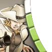

Bill Sans-Visage
Pendant la première phase de son tour, il pioche 1 carte plus 1 carte par blessure infligée (ou point de vie perdu).

 ] comme cartes RATÉ ! [
] comme cartes RATÉ ! [ ] et inversement.
Elle ne déroge cependant pas à la limite habituelle d'un seul BANG! par tour.
] et inversement.
Elle ne déroge cependant pas à la limite habituelle d'un seul BANG! par tour.

Réalisation : Oh-oh-ooh!
 ].
].

Réalisation : Un pied dans la tombe

Réalisation : La revanche du zombie





Réalisation : Le dernier des survivants